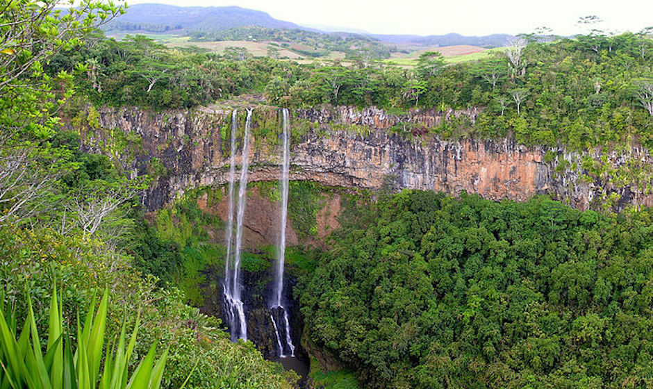
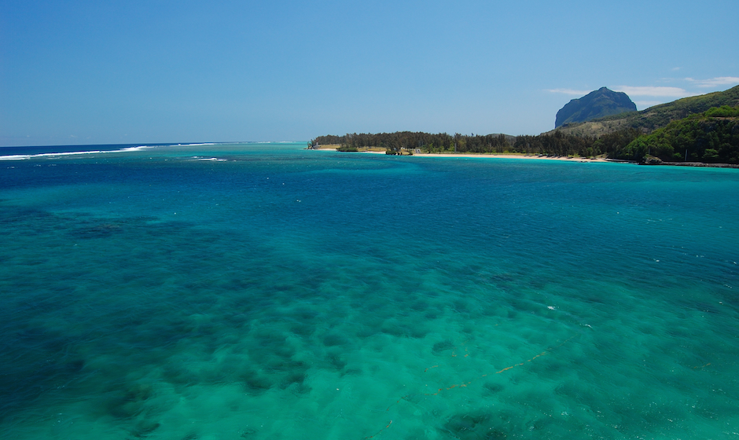
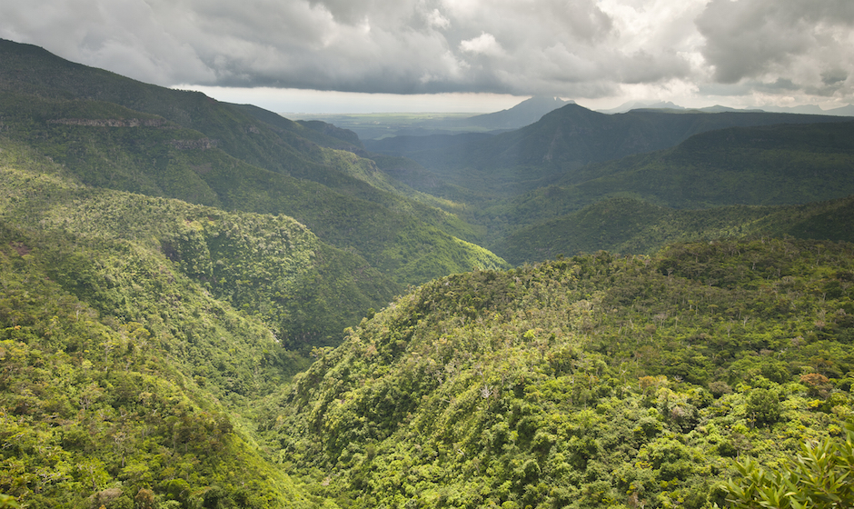
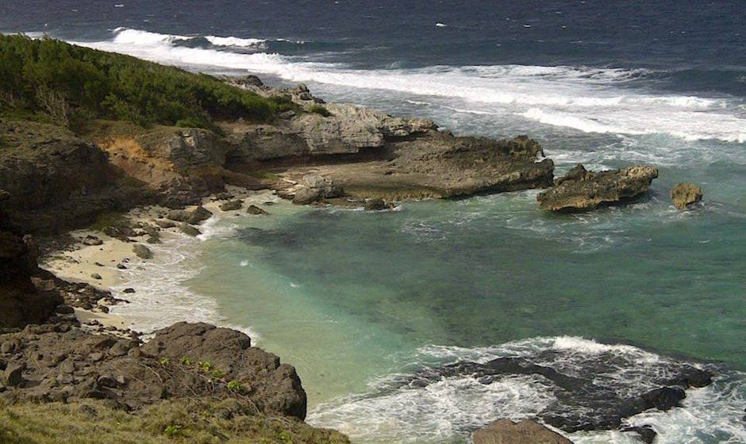
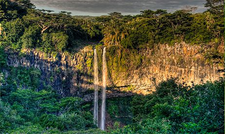

Tamarin Falls
Address: Henrietta Branch Rd
Location: West
Minimum Age: 12
Operating Days: All Days
Duration: 6 hrs
Activity Time: 09:00 - 15:00
Transportation: Offered as Supplement
Comment Please bring backpack, hiking or sports shoes, suitable clothing,
swimming suit and various protections (sun cream, insects’ repellent, warm clothes) and spare shoes & clothes
Le Morne Brabant
Le Morne Brabant Mountain, situated as part of the Le Morne peninsula
at the extreme southwestern tip of Mauritius is one of the most popular
tourist attractions in Mauritius and a UNESCO World Heritage Site
Macchabee viewpoint at Black River Gorges
Black River Gorges – the only national park in Mauritius – has a variety of different viewpoints,
all of which offer captivating views of the forested mountain landscape.
The Macchabee viewpoint can be found dead in the middle of the 10km long Macchabee trail
which climbs from Black River to Petrin, and marks the highest point of the park.
From here, the far-reaching views often include sightings of white-tailed tropicbirds, various dove species,
and if you’re lucky, the rare Mauritian pink pigeon.
Gris Gris beach
To experience Mauritius at its most windswept and wild, you’ll need to pay a visit to the island’s southern coast,
where a break in the reef allows the Indian Ocean waves to unleash their true power.
The best place to experience this is by standing on top of the grassy cliffs above beautiful Gris Gris beach,
just outside the small village of Souillac, where monster waves roll in and crash against the rocks.
There’s also a path leading down to the white sand beach,
though it’s definitely one for strolling along the shore rather than swimming in the sea.
Alexandra Falls
If you love waterfalls as much as we do, this is a “not-to-be-missed”!
Alexandra Falls is hidden in the deep jungle of the Black River Gorges National Park
and is something out of an Avatar movie scene
(although you won’t find dragons there)! Strolling around this wondrously imaginative setting,
you’ll find it hard to believe you’re on planet Earth! Alexandra Falls could definitely be the reason
you’ll wake up at 6 A.M in Mauritius to achieve a peaceful and pleasant mindset